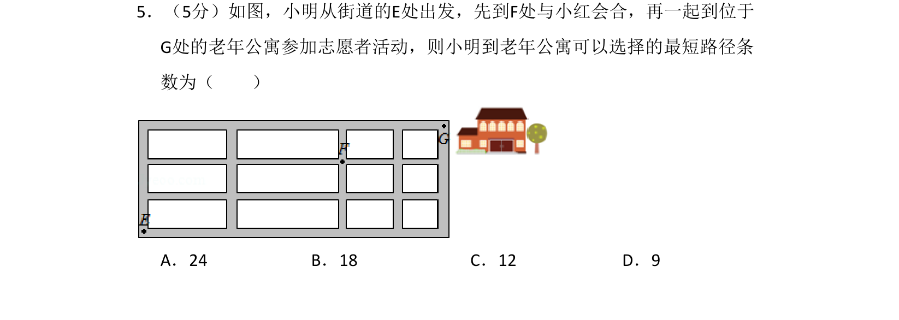
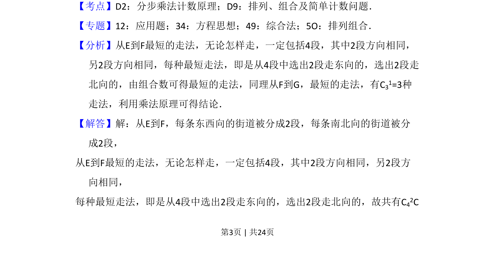
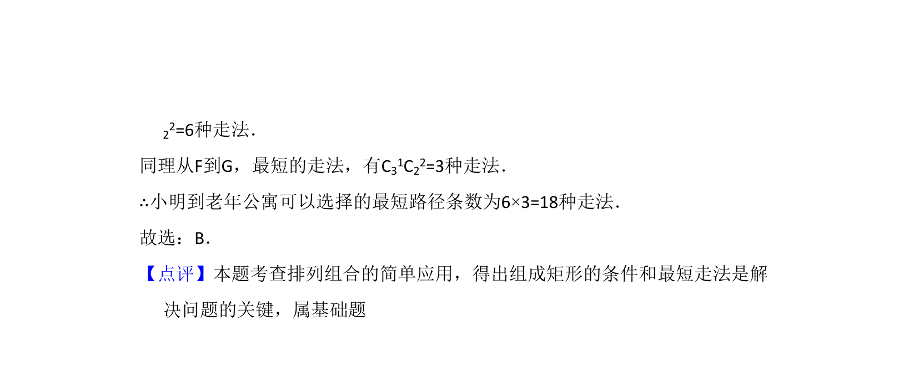

考点：分步乘法计数原理 排列 组合

小明从E到F再到G的最短路径问题，用组合数与分步乘法计数原理求解。


📄 原 PDF 第 3 页：
素材/真题/吉林/2008-2024·（吉林）数学高考真题/2016年高考数学试卷（理）（新课标Ⅱ）（解析卷）.pdf
5．（5分）如图，小明从街道的E处出发，先到F处与小红会合，再一起到位于 G处的老年公寓参加志愿者活动，则小明到老年公寓可以选择的最短路径条 数为（ ） A．24 B．18 C．12 D．9
【考点】D2：分步乘法计数原理；D9：排列、组合及简单计数问题．菁优网版权所有 【专题】12：应用题；34：方程思想；49：综合法；5O：排列组合． 【分析】从E到F最短的走法，无论怎样走，一定包括4段，其中2段方向相同， 另2段方向相同，每种最短走法，即是从4段中选出2段走东向的，选出2段走 北向的，由组合数可得最短的走法，同理从F到G，最短的走法，有C31=3种 走法，利用乘法原理可得结论． 【解答】解：从E到F，每条东西向的街道被分成2段，每条南北向的街道被分 成2段， 从E到F最短的走法，无论怎样走，一定包括4段，其中2段方向相同，另2段方 向相同， 每种最短走法，即是从4段中选出2段走东向的，选出2段走北向的，故共有C42C